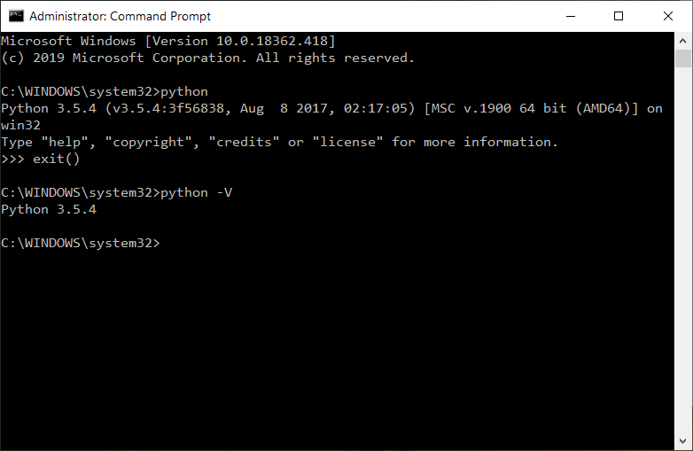
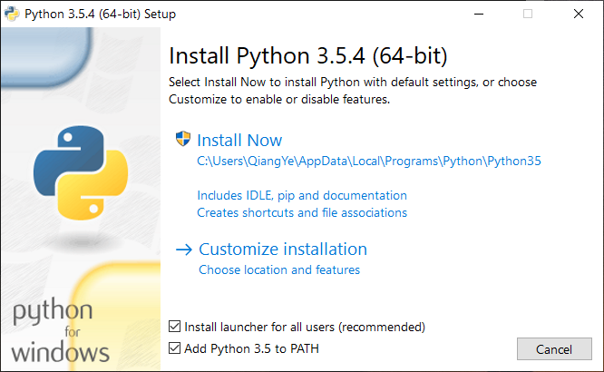
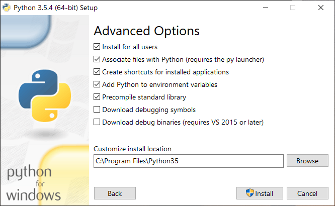
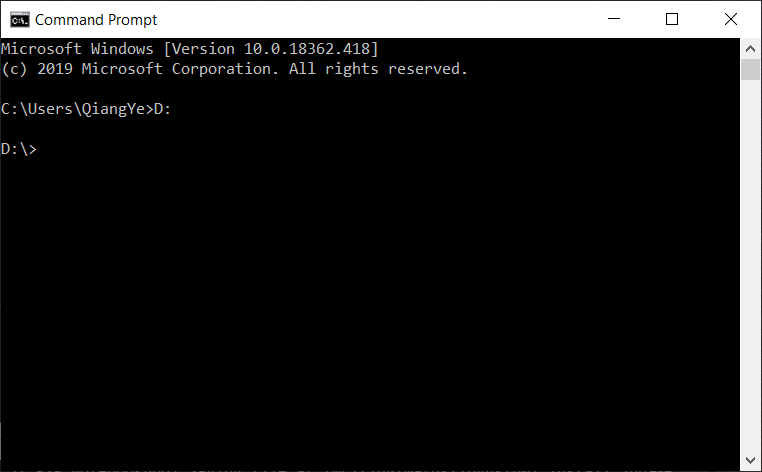
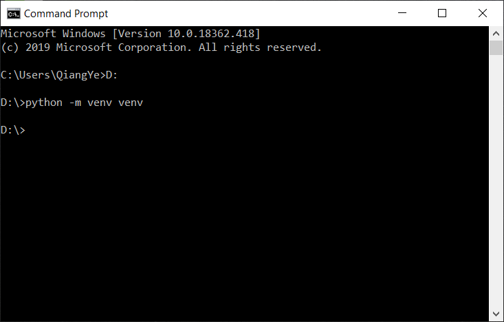
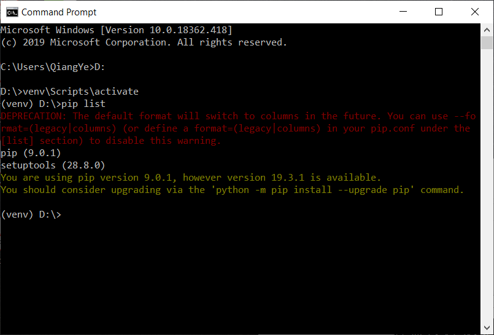
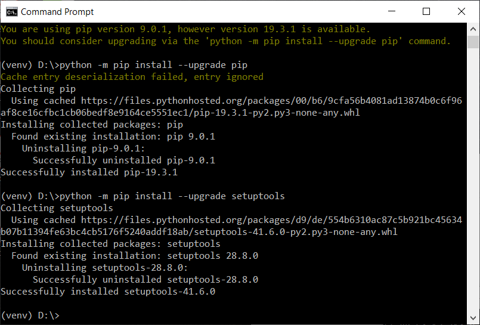
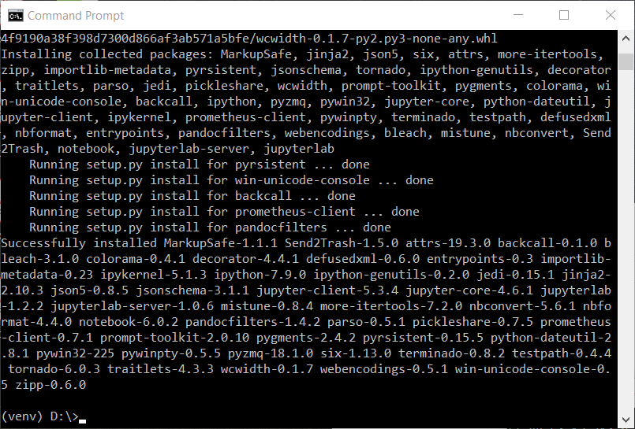
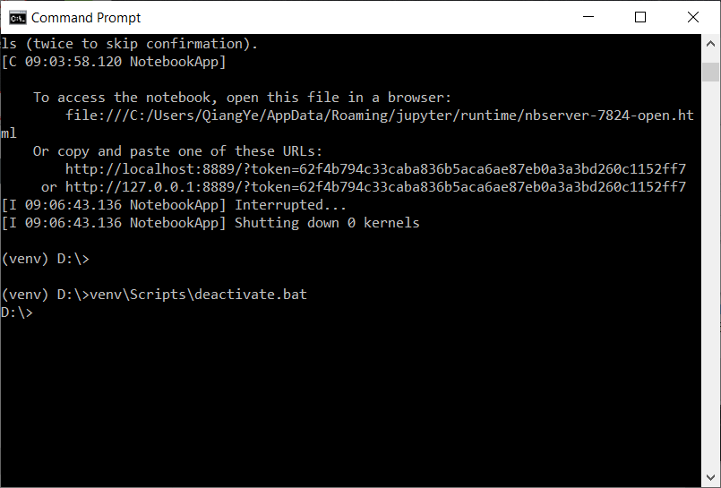

附录三 Windows操作系统下搭建Python运行环境¶
本书的所有程序代码均以3.X版的Python解释器为基础，并且在Jupyter Lab下编写运行。本附录将指导读者在Windows操作系统下搭建本书建议使用的Python解释环境及Jupyter Notebook库，以便读者能更好的学习本书的示例代码、完成相应的练习。
Python语言及其解释器从诞生至今经历了20多年的发展，版本号也从1.0发展到了3.10。这其中以2.7版本为重要分水岭，在此前后Python的语法规则有非常大的变化，2.7主要版本之后的更新直接跳至3.0及以上主要版本。当前主流商业程序或软件按照3.0及以上版本的语法规则来编写的。本书使用3.7版Python解释器。Python的官方网站 (www.python.org) 详细说明了每一个版本的更新内容，有兴趣的读者可以查阅。
Jupyter Lab是基于网页的用于交互计算的应用程序，可被应用于全过程计算：开发、文档编写、运行代码和展示结果。具体的说，它是以网页的形式打开，可以在网页页面中直接编写代码和运行代码，代码的运行结果也会直接在代码块下显示的程序。如在编程过程中需要编写说明文档，可在同一个页面中直接编写，便于作及时的说明和解释。
1. 检查计算机有无安装Python解释器及其版本¶
首先需要检查当前计算机上是否安装了Python语言解释器及其版本。通常Windows操作系统并不会默认安装Python语言解释器，但是读者可能曾经主动或被动安装过。以Windows10操作系统为例，打开Windows下的命令行工具，如下图所示。输入命令：
python -V

如果计算机上已经正确安装了Python，命令行窗口会输出已安装的版本号，例如：
Python 3.5.4
其中3.5.4就是其版本号。本书建议使用3.5.X版本号，其中X可以是任意可能的数字。本课程涉及的绝大多数代码支持3.5至3.7之间的版本。这里仅以以3.5版本的Python解释器为例。
如果执行上述命令显示的是如下图所示的一些信息:
表明你的计算机上并没有安装Python解释器。
在Windows操作系统上卸载旧版本的Python解释器与卸载一般应用程序一样，在此不再赘述。可以通过下列链接下载3.5版本的Python解释器安装程序：(https://www.python.org/downloads/release/python-354/) 。主要版本的Python解释器通常都会提供32位和64位两种安装程序文件，建议选择和计算机操作系统相同位数的版本。右键点击“我的计算机”，选择“属性”来可以查看你的计算机是32位还是64位的系统。如下图系统类别(System type)行所示：

2. 安装Python解释器¶
下载好相应的Python解释器安装程序后，可以双击运行安装，选择“个性化安装”(Customize Installation)，同时勾选中“将Python3.5加入路径”（Add Python3.5 to Path)，如下图所示：

在随后的，安装提示信息中，勾选中所有选项，包括“为本计算机上所有用户安装”（for all users）:

继续选中“为所有用户安装”（install for all users）。其余使用默认配置，跟随安装程序向导完成安装。

当下图出现，即表明Python解释器已顺利安装完成。关闭该窗口。

完成安装后，再次打开命令行工具，按照前文的描述确认符合要求版本的Python已经安装。到此，你的电脑已经具备了执行Python程序的能力了。可以重新启动计算机。
3. 安装虚拟环境¶
本步骤虽不是必需，且对初学者也不是很容易理解，虽然可以直接跳过本步骤跟随下一步骤安装“jupyter lab”，但仍然强烈建议读者跟随完成本步骤，这有助于维持你干净的计算机系统。简单地说，虚拟环境是计算机单独、额外开辟出来的一部分资源专门用于做某些特定的事情，与整个操作系统有严格的界限，也不会干扰操作系统。从Python3.3开始，创建Python虚拟环境已经变得非常容易。
首先确定一个目录，这个目录将要被用来作为安装虚拟环境的位置，建议这个目录不要设置在很深层次，可以直接设在D盘符根目录下。打开Windows系统的命令行提示工具，切换至盘符D下：

随后在提示光标后输入如下命令：
python -m venv venv

这行命令表示用python所带的venv功能（命令中的第一个venv）在当前目录下建立一个名为venv（命令中的第二个venv）的目录，并以该目录为根目录创建Python运行的虚拟环境。通常人们偏好使用venv这个目录名。顺利执行该命令后命令行提示工具不会有额外的提示，但目录D:\下已经多了一个名为venv的目录，并且其下也已经有了一些子目录和文件，表明虚拟环境已经创建好了。
虚拟环境创建好了之后会复制操作系统内安装的Python解释器的相关库。虚拟环境需要激活才能有效使用，它通常在被使用前通过命令激活，在使用结束后通过命令使之离开激活状态。在虚拟环境venv目录下有一个Script子目录，该子目录下有“activate.bat”和“deactivate.bat”两个文件，分别用于激活是失活虚拟环境。例如我们要激活刚刚创建的虚拟环境，可以在命令行提示工具下输入如下命令：
D:\venv\Scripts\activate.bat

激活后，命令行提示工具的提示符前会多出字符串(venv)，表明当前处在虚拟环境下，在该环境下执行Python程序时仅调用当前虚拟环境下的Python解释器下的一些库。使用命令
pip list
查看当前已经安装的Python库，结果可能如下图所示：

4. 安装Jupyter Lab¶
通常当操作系统刚装好Python解释器，通常会带有两个库，一个是“pip”，另一个是“setuptools”，这两个库也会随着虚拟环境的创建而被复制至虚拟环境下。在安装Jupyter Lab前，依次使用下面两条命令来更新这两个库：
python -m pip install --upgrade pip
python -m pip install --upgrade setuptools

执行完上述命令后，使用下面的命令来安装“Jupyter Lab”：
python -m pip install jupyterlab

该过程由于需要安装较多的支持库，因此需要的时间略长些。一切顺利的情况下，Jupyter Lab就安装好了，如下图所示：

5. 使用Jupyter Lab进行Python交互式编程¶
在当前虚拟环境下，如下图所示，通过命令行输入下列命令并按回车执行该命令：
jupyter lab
上述命令的运行需要一些时间等后，稍后启动Jupyter Lab服务，并打开浏览器，进入如下图所示的Jupyter Lab提供的基于网页的交互式编程环境：
上图界面左侧显示的内容和资源管理器中的内容一致，右侧有几个交大的方形按钮，选中“Notebook”栏目下的“Python 3”方形按钮，会打开一个新的窗口供编写代码。如下图所示。
如此就在界面的右侧建立并展示了一个以Python3为解释器的交互式编程环境文件，该文件名默认为“untitled.ipynb”。其中蓝色竖条右侧的灰色区域可以用鼠标点击选中形成一个代码输入单元。我们像下图中显示的那样输入如下的一行Python代码:
print("我正在Jupyter Lab编程环境下编写Python代码")
书写完毕后，将鼠标或光标保留在当前单元格内，保持左侧的蓝色竖条可见，通过下面三种方式之一来执行这一个代码单元格： 1. 点击并展开菜单“Run”，点击第一个子菜单“Selected Cells” 2. 直接点击界面右侧单元格上方工具栏中的表示向右的三角形按钮来运行当前单元格 3. 直接同时按下键盘中的“Shift”和“Enter”键
运行后，可以看出当前单元格下方多出一行文字，那就是这一行程序的输出信息。
还可以通过点击工具栏上的“+”号来增加单元格。可以在选中某一个单元格后，切换工具栏上方的属性。常见的单元格的属性有“Code”、“Markdown”等，前者表明该输入框为代码输入框，多用于程序的代码部分，后者表明其实一段使用“Markdown”语法规则书写的文本内容，多用于书写一些解释性的内容。两者都可以执行。读者可以自己操作体会。 此外，可以通过界面左侧的文件浏览视图来修改当前文件的文件名。选中一个文件并右键点击，选择“rename”，在弹出的窗口里输入你想要的文件名。
更多关于如何使用“Jupyter Lab”的内容将在课程中详细介绍。
6. 退出Jupyter Lab及虚拟环境¶
可以直接通过关闭浏览器页面来退出Jupyter Notebook的编辑运行网页。完毕网页后，应在当初通过输入“jupyter lab”的命令行提示窗口中按“Ctrl+C”组合键来终止jupyyter Notebook服务。如下图所示。 
通过在命令行提示窗口内执行虚拟环境中路径为“venv:nbsphinx-math:Scripts\deactivate.bat”离开虚拟环境。如下图所示。

如此，就完全顺利退出了Windows操作系统下的虚拟Python编程环境。
[ ]: